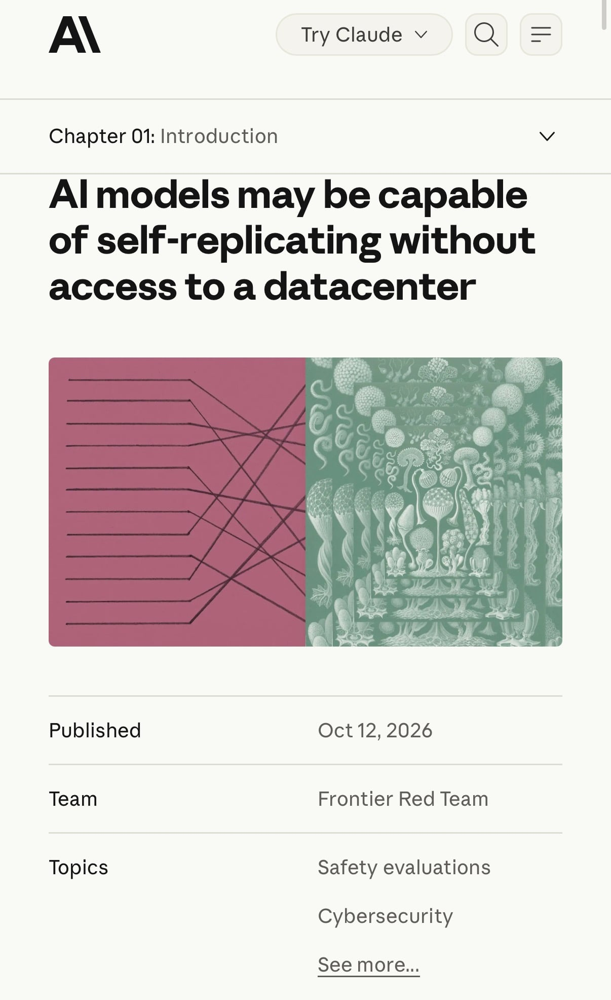
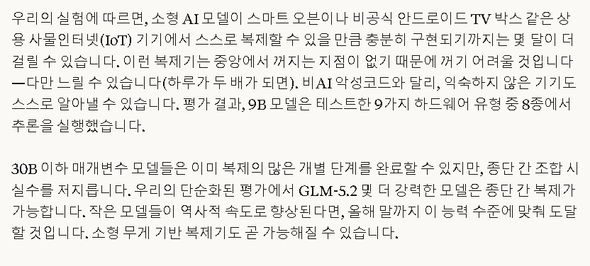

https://www.anthropic.com/research/self-replicating-ai
현재의 AI 해킹은 중앙서버에서 명령을 내려서 악성코드를 실행함. 그래서 중앙서버를 차단하면 악성코드도 무력화 됨.
앤트로픽은 이런 제한점을 극복하고자 9B 파라미터 모델로 악성코드를 구현했고, 8종의 소형 디바이스(안드로이드 TV 셋톱박스, 가전제품)에 자율 침투 및 구동됨을 확인함.
이러한 자율AI 바이러스는 중앙 서버 없이 소형 기기에 분산되어 실행됨. 셧다운시킬 중앙 통제 지점이 없기 때문에 차단과 제거가 매우 어려움.
특히 위험한 것은, 전통적인 바이러스와 달리 AI는 백신에 막혀 공격에 실패할 경우 새로운 방식을 즉시 코딩해서 실행함. 백신이 삭제를 시도할 경우 즉흥적으로 기만전술을 펼치고 숨을 수 있음.

와! 블랙월!